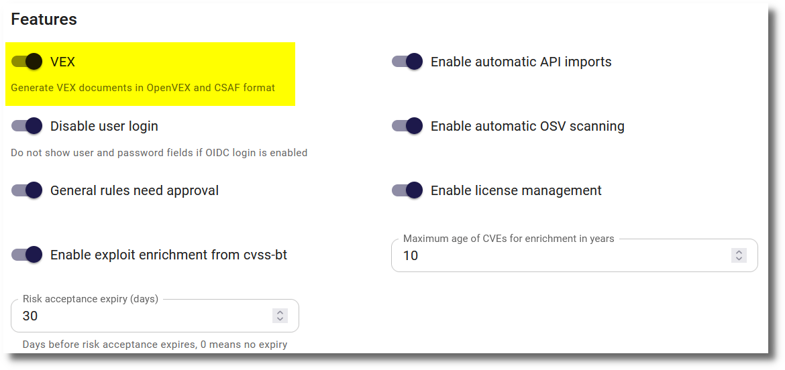

VEX documents
A VEX (Vulnerability Exploitability eXchange) document is a form of a security advisory that indicates whether a product or products are affected by a known vulnerability or vulnerabilities. SecObserve supports the export and import of VEX documents in three formats:
- The Common Security Advisory Framework (CSAF) format is an OASIS standard
- CycloneDX is an international standard for Bill of Materials (ECMA-424).
- OpenVEX is a community-driven format, maintained by an OpenSSF special interest group
Feature flag
The VEX feature is is disabled by default because not all installations will use it. It can be enabled by setting the feature flag FEATURE_VEX in the Settings:

Enabling the feature flag will make the VEX functionality available in the main navigation bar and enable the "VEX justification" field in several places.
Export a new VEX document
To export a VEX document, the user has to define a set of attributes in a dialog. Some of them are different per format,other attributes are common to all formats:
| Attribute | Optionality | Description |
|---|---|---|
Product |
optional | If a product is selected, only vulnerabilities for that product will be included in the VEX document. |
Vulnerabilities |
optional | Zero or more names of vulnerabilities to be included in the VEX document, e.g. CVE-2021-44228 |
Branches / Versions |
optional | If a product is selected, the VEX document can be limited to cover only the selected branches / versions of this product. |
ID prefix |
mandatory | (Only CSAF and OpenVEX) The ID prefix is part of of the unique identifier of the VEX document. The unique id has the format prefix_year_counter, where the counter is increased by 1 for every new document per prefix and year. This unique id will stored in a designated attribute in the VEX document and used for the filename of the VEX document. |
Either a product or at least one vulnerability has to be selected.
After pushing the Create button in the dialog, the VEX document with the version 1 will be created and ready for download. Additionally a database entry with all attributes is created, which can be selected later to export an updated version of the VEX document.
Exporting CycloneDX VEX documents
CycloneDX VEX documents can only be exported as dedicated BOMs. This means the components with vulnerabilities are not listed in the document but are referenced with BOM-links. Therefore all vulnerabilities to be exported need to have BOM-link, which means either they have been imported via a CycloneDX document or they have been found by the OSV scanner after uploading components with a CycloneDX SBOM (see SBOM workflow).
Mapping of justifications
Justifications have different enumerations for CSAF/OpenVEX compared to CycloneDX. When entering a justification, e.g. for an observation assessment, a parameter in the settings (see Feature flag), decides if the user gets the CSAF/OpenVEX list or the CycloneDX list of justifications. E.g. if an organisation decides to publish CycloneDX VEX documents, this attribute should be set to CycloneDX. Then the user can only enter justifications, that can be written directly to the VEX document.
If a VEX document is exported in a format that does not correlate with this parameter, the justifications are mapped to corresponding values of the exported format.
Export an updated VEX document
After selecting the entry of either a CSAF or OpenVEX document from the respective list, a form shows the details of its attributes and a button to update a document. Some of the attributes can be changed for a new version of the document. If there have been no changes to the included vulnerabilities, no new document will be created. Otherwise a new version of the document will be created and ready for download.
Import VEX documents
VEX documents can be imported in CSAF, OpenVEX and CycloneDX (integrated and dedicated) format. After importing the file, the document will be parsed and the VEX statements will be applied to the referenced observations. A user needs to be superuser to import VEX documents.
When observations are imported, the VEX statements will be applied to the referenced observations as well.
How are the referenced observations determined?
For CSAF, OpenVEX and CycloneDX integrated VEX documents, the reference is determined by PURLs.
- First, the relevant products are determined by the product PURL. The PURL of the product or the PURL of a branch must match the product PURL in the VEX statements.
- Second, the relevant observations are determined by their Vulnerability ID and optionally the component PURL. The Vulnerability ID of the observation must be the same as the Vulnerability ID of the VEX statements. If the VEX statement contains a component PURL, this must match the vulnerability PURL in the component PURL of the observation.
For CycloneDX dedicated VEX documents, the reference is determined by a BOM-link. These documents contain only vulnerability and VEX information with references to components in a separate SBOM. Therefore it is a precondition to have imported the corresponding SBOM before. Then the observations are determined by the Vulnerability ID and the BOM-link.
When do PURLs match?
Two PURLs match if:
- The
typeis the same in both PURLs. - Both PURLs have the same
namespaceor there is nonamespacein both PURLs. - The
nameis the same in both PURLs. - Either both PURLs have the same
version, there is noversionin both PURLs or there is aversionin one PURL but not in the other one. - When both PURLs have
qualifiers, then all key/value pairs that exist in both PURLs must be the same. When both PURLs do not havequalifiersor some of the keys in one set ofqualifiersdo not exist in the other PURL, then the PURLs match as well. - Either both PURLs have the same
subpath, there is nosubpathin both PURLs or there is asubpathin one PURL but not in the other one.